a python package for converting markdown to remarkjs slides.
a sister project of pyreveal.
This project is done to put the markdown content to a base template file which is styled using jinja2, and also use the yaml header to do the config for each file.
In other words, the purpose of this project focused on separating the heavy html/css configs from the markdown content, and keep only a minimal config setup using the yaml way on top of the markdown file.
Please try.
git clone https://github.com/wcchin/pyremark_slides.git
cd pyremark_slides
pip install -e .
cd slides_dir
pyremark -i a_file.md -w
a file name a_file.slides.html will be generated, open it with a browser.
slide_title: testing remarkjs
custom_css: custom.css
remarkjs_path: remarkjs/remark-0.15.0.js
# Some title
---
second page
| Theme | Style | Title page | Content page |
| ---------- | ------------------ | ------------------------------------------------------------ | ------------------------------------------------------------ |
| Catppuccin | Mocha
(dark) | 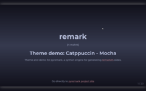 | 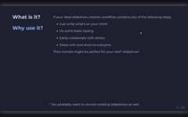 |
| Catppuccin | Latte
(light) | 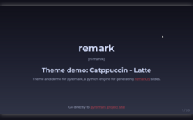 | 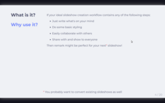 |
| Rosepine | Moon
(dark) | 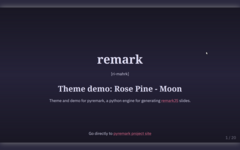 | 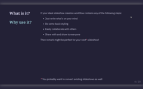 |
| Rosepine | Dawn
(light) | 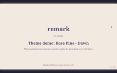 | 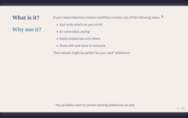 |
| Everforest | Night
(dark) | 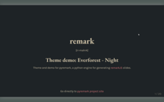 | 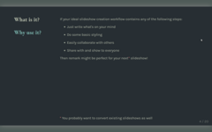 |
| Everforest | Day
(light) | 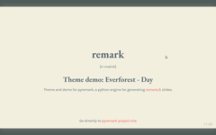 | 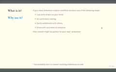 |
| Nord | Polar
(dark) | 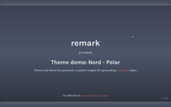 | 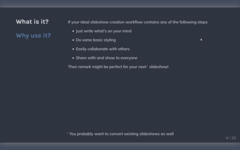 |
| Nord | Storm
(light) | 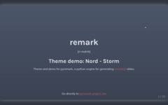 | 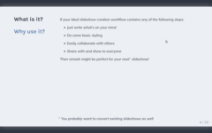 | Nord | Storm
(light) | | |
s to access the search function. q for the table of content. These features were in testing stage.
Note:
custom.css file default to this:
@import url(https://fonts.googleapis.com/css?family=Yanone+Kaffeesatz);
@import url(https://fonts.googleapis.com/css?family=Droid+Serif:400,700,400italic);
@import url(https://fonts.googleapis.com/css?family=Ubuntu+Mono:400,700,400italic);
body { font-family: 'Droid Serif'; }
h1, h2, h3 {
font-family: 'Yanone Kaffeesatz';
font-weight: normal;
}
.remark-code, .remark-inline-code { font-family: 'Ubuntu Mono'; }
{kind=link}
{kind=link}
{kind=link}
{kind=link}
{kind=link}
{kind=link}
{kind=link}
{kind=link}
{kind=link}
{kind=link}
{kind=link}
{kind=link}
{kind=link}
{kind=link}
{kind=link}
{kind=link}